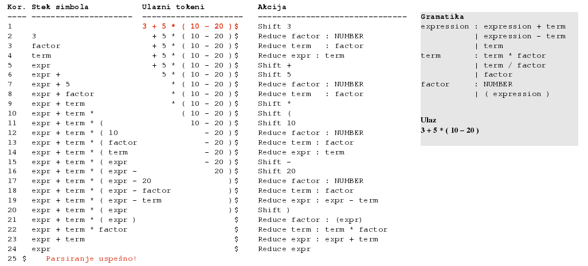

Kreirano 2019-11-03 Sun 17:19, pritisni ESC za mapu, m za meni, Ctrl+Shift+F za pretragu
Osnovne klase alata:
Stablo parsiranja za ulazni string -(4-1)*5/(2+4.67)
-(4-1)*5/(2+4.67)
-(4-1)/5/(2+4.67) možemo u postfiksnoj notaciji (obrnuta
poljska notacija) zapisati kao 4 1 - 5 / 2 4.67 + / -. Ovo će rezultovati
različitim stablima parsiranja ali je suština izraza ista i može rezultovati
istim stablom apstraktne sintakse.
Formalna gramatika je G = (N, Σ, P, S) gde je:
N - konačni skup neterminalnih simbola,Σ - konačni skup terminalnih simbola,P - konačni skup produkcionih pravila (produkcija) oblika:
(Σ ∪ N)∗ N(Σ ∪ N)∗ → (Σ ∪ N)∗S - neterminal iz skupa N (S ∈ N) koga nazivamo početnim simbolom.Formalne gramatike se mogu klasifikovati prema hijerarhijskoj klasifikaciji Noama Čomskog1. Prema ovoj klasifikaciji gramatike mogu biti:
αAβ → αγβA → γA → a, A → aBA → γ
G = ({S}, {a, b}, P, S)
S → aSa
S → bSb
S → ε
S → aSa (1) S → bSb (2) S → ε (3) S (1)→ aSa (1)→ aaSaa (2)→ aabSbaa (3)→ aabbaa
1. S → x 2. S → y 3. S → z 4. S → S + S 5. S → S - S 6. S → S * S 7. S → S / S 8. S → ( S )
S (startni simbol) → S - S (pravilo 5) → S * S - S (pravilo 6, primenjeno na levi neterminal S) → S * S - S / S (pravilo 7, primenjeno na desni neterminal S) → ( S ) * S - S / S (pravilo 8, primenjeno na levi S) → ( S ) * S - S / ( S ) (pravilo 8, primenjeno na desni S) → ( S + S ) * S - S / ( S ) (itd.) → ( S + S ) * S - S * S / ( S ) → ( S + S ) * S - S * S / ( S + S ) → ( x + S ) * S - S * S / ( S + S ) → ( x + y ) * S - S * S / ( S + S ) → ( x + y ) * x - S * y / ( S + S ) → ( x + y ) * x - S * y / ( x + S ) → ( x + y ) * x - z * y / ( x + S ) → ( x + y ) * x - z * y / ( x + x )
Bilo koja niska terminala i neterminala koja se može dobiti primenom produkcionih pravila počevši od početnog simbola naziva se rečeničnom formom (Sentential Form).
( x + S ) * S - S * S / ( S + S )
Ukoliko se rečenična forma sastoji samo od terminala onda je to rečenica (Sentence).
( x + y ) * x - z * y / ( x + x )
if a then if b then s else s2 Može da se parsira kao: if a then (if b then s) else s2 ili kao: if a then (if b then s else s2)
if-else klauzule može se dodati
ključna reč endif.
Stablo koje oslikava prioritet i asocijativnost operacija
A → Aγ.
Pravilo A → Aa | B postaje A → Ba*
Primer:
expr → expr '+' term | number
postaje:
expr → number ('+' term)*
letter = "A" | "B" | "C" | "D" | "E" | "F" | "G"
| "H" | "I" | "J" | "K" | "L" | "M" | "N"
| "O" | "P" | "Q" | "R" | "S" | "T" | "U"
| "V" | "W" | "X" | "Y" | "Z" ;
digit = "0" | "1" | "2" | "3" | "4" | "5" | "6" | "7" | "8" | "9" ;
symbol = "[" | "]" | "{" | "}" | "(" | ")" | "<" | ">"
| "'" | '"' | "=" | "|" | "." | "," | ";" ;
character = letter | digit | symbol | "_" ;
identifier = letter , { letter | digit | "_" } ;
terminal = "'" , character , { character } , "'"
| '"' , character , { character } , '"' ;
lhs = identifier ;
rhs = identifier
| terminal
| "[" , rhs , "]"
| "{" , rhs , "}"
| "(" , rhs , ")"
| rhs , "|" , rhs
| rhs , "," , rhs ;
rule = lhs , "=" , rhs , ";" ;
grammar = { rule } ;
Gramatika: S → E E → T + E E → T T → int
Ulaz: int + int + int
Production Input Action
---------------------------------------------------------
S int + int + int Predict S -> E
E int + int + int Predict E -> T + E
T + E int + int + int Predict T -> int
int + E int + int + int Match int
+ E + int + int Match +
E int + int Predict E -> T + E
T + E int + int Predict T -> int
int + E int + int Match int
+ E + int Match +
E int Predict E -> T
T int Predict T -> int
int int Match int
Accept
http://stackoverflow.com/questions/5975741/what-is-the-difference-between-ll-and-lr-parsing

Kako enkodovati pravila prioriteta i eliminisati levu rekurziju?